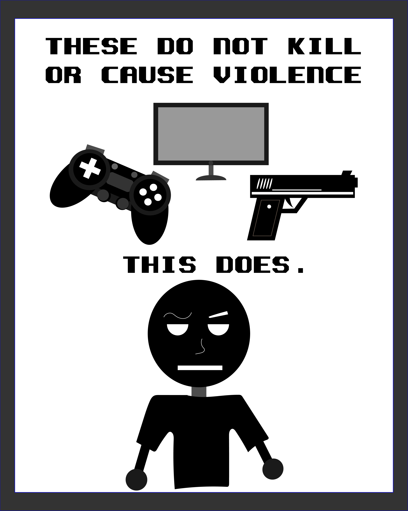
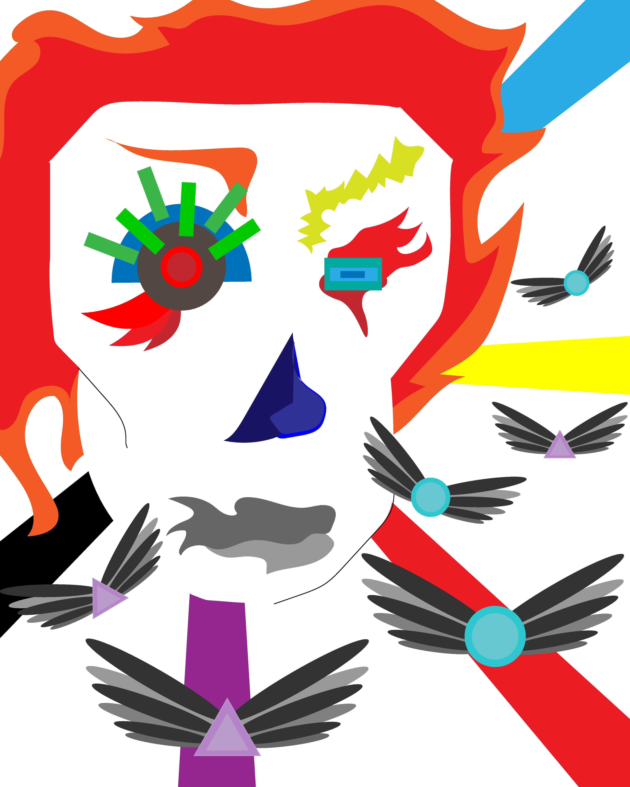
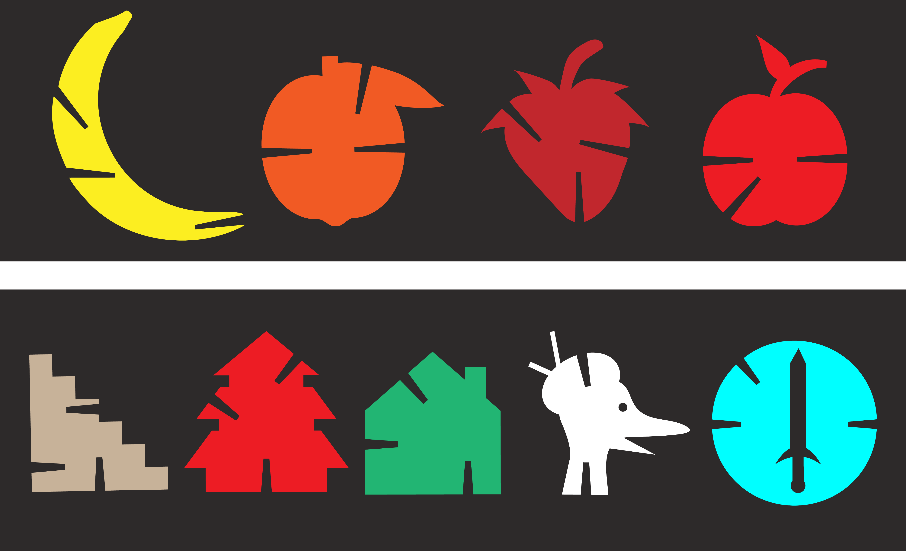
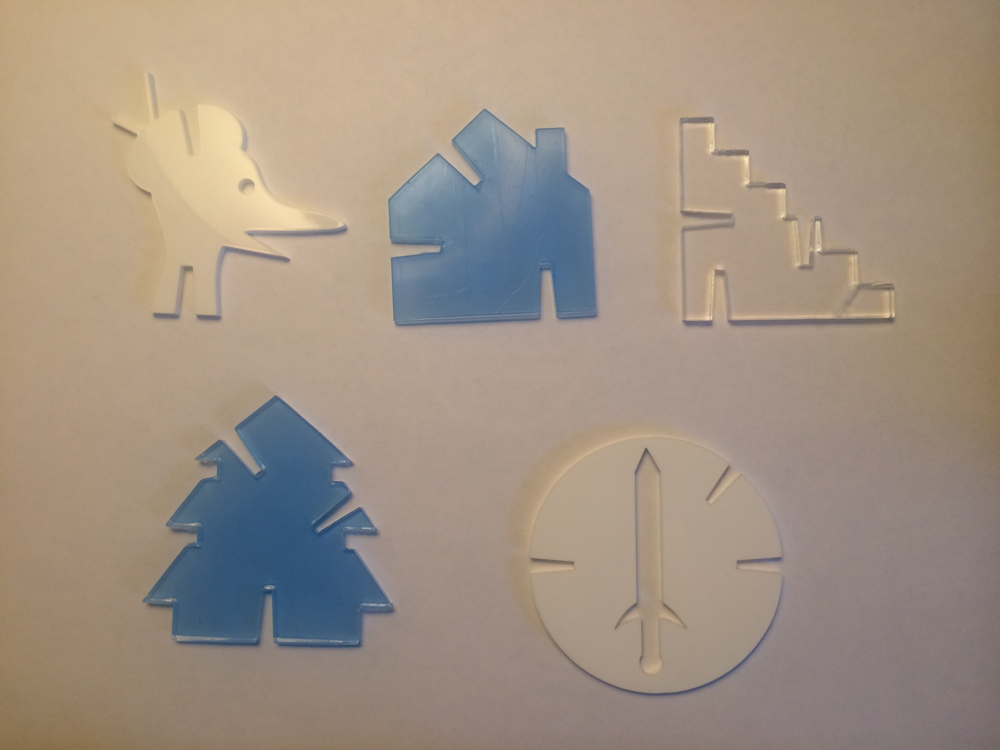

SAMPLES OF ARTWORK
Video games! Cheer up!
I created this as a self portrait to portray my feelings of excitement and how I get cheered up by video games when I feel down. Looking forward to new video games also creates joyful anticipation within me. The Arcade machines are used to represent video games, because I began playing them on there. The character represents me, as he feels sad and lost at the beginning, but then the arcade machine appears to cheer him up. I created this scene to show how whenever I feel overwhelmed at school or other life matters, I always remember I'll have awesome video games waiting to be played as soon as I resolve them, and I also think of the future games to come. That cheers me up, and motivates me. Then, when I'm all free, I'll enjoy a nice peaceful time playing some video games (hence the silly dance at the end). Videogames were my inspiration to become a digital artist and I have always been mesmerized by the technology and all other resources used to create them. Without them I would have never sought to create the works I do today, nor the views I have of the future.
The whole scene and Arcade Machines were animated and modeled by me in Maya.


The True Culprit
The mainstream media was and still continues to blame video games for violence, so I made this work as a way to spread awareness to people about the TRUE culprit behind mass shootings and other violent acts.

What Makes Me
This is a lock screen/wallpaper for phones that shows different bubbles with objects connecting to a star. It is meant to represent the different things that make me: Video games (controller), School (pencils), Music Notes (listening to music is essential for me to focus and stay calm), and the Heart which symbolizes other life matters. So if these make you as well, feel free to use it.

Lights of the Future
My inspiration for this project comes from a view I have of the future. I think designs projected onto buildings and other objects, or just the simple fact that you see a structure displaying different colorful designs and lights, help give a building life and makes it feel more advanced and futuristic. In the future I want to see all sorts of buildings glowing with neon lights, displaying different designs (not just advertisements). I think that would give us very futuristic and artistic environment, which is also why I use a robotic voice throughout the video; to give a feeling of what awaits us in future.


Coat of Arms and Banner
This a coat of arms and a banner that I made, as a way to show my adoration and connection towards the San Jose City Hall.

BANNER VERSION 2

A Taste of Space
This is a Virtual Installation I made using Maya. It was made to be presented as a virtual installation that gives you a tiny taste of outer space with a 3D view of the planets of our solar systems and some distant galaxies and stars. The big fan is there to make the room/scene feel cold just like outer space.


A Brief View of the Solar System
My inspiration for “A brief view of the Solar System” came from my admiration of outer space. My work consists of a 3D mock-up, made using Maya, of the Solar System with the planets rotating around the orbit of the sun. My animation is intended to give its viewers a brief view of what and how our solar system works, with each planet rotating around the sun at different speeds. I zoom into some planets as a way of trying to immerse the viewer more and making it seem as if they are traveling around the planets' orbit trying to pick a planet to visit. The sounds they make when the camera zooms in, are their actual sounds from outer space. Overall, my scene is intended to to give off a feeling of exploration, wonder, and tranquility.
Hero Comparison
This video depicts Fictional Heroes, and Real Life Heroes through a side by side comparison in order to bring attention to the fact that “Heroes” are not always what we see up in the big screens and comic books. One must think of the real life people that dedicate their lives to help and protect others, raise a family as a single parent, and those who sometimes go as far as to risk their own life to protect lives. That is a what a Hero should be.
Abstract Destruction
This is an abstract representation of humans destroying the planet for the sole purpose of profit. The shapes with wings represent the people and other life forms of the planet that pay the price, meanwhile the abstract face of an evil entity with the different colored lines represents humans gaining their temporary fortune.

Michael Jackson Book Cover
This is a book cover of Michael Jackson’s book: “Moonwalker” that I made using illustrator. The designs are probably not as good looking as the real thing was, but I certainly did try my best to capture it, especially since these particular designs were made by only using a mouse and keyboard.

p5 Clock
The overall clock was made in Atom using p5.js code, through the use of arcs and other commands that keep track of time. The seconds bar is the cyan colored arc and its fill displays a different color with each passing second (achieved with colorMode). It begins small but it expands around the clock, once the arc connects, 60 seconds have gone by. The purple arc with a red fill displays minutes and the black arc with a white fill displays hours (their fill however, doesn’t change color.) During P.M hours a green turquoise color is displayed and during A.M hours a purple background is displayed.

8:30AM---AND---2:50AM


3:40PM---AND---5:35PM


see sketch code
Laser Cuts
I designed these with the purpose of making shapes that combine with each other; Therefore, to achieve that, I added notches and nudges at the end of the notch to make them hold better. They then were cut using the laser cutter.

LASER CUTS Set 1


LASER CUTS Set 2
